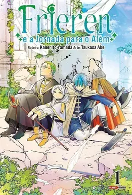

Frieren e a Jornada para o Além Vol. 1
A história depois de um grupo de heróis ter derrotado o Rei Demônio. Você acompanhará Frieren, uma elfa diferente dos seus três companheiros de viagem. Você verá o que ela viveu no mundo, o que ela sentiu depois da aventura ter terminado. E ainda, sua relação com os que ficaram e o que seria a oração para os mortos... ´Essa história começa depois que a aventura termina´. ´Uma fantasia pós-aventura que conta o modo de viver esses heróis!´